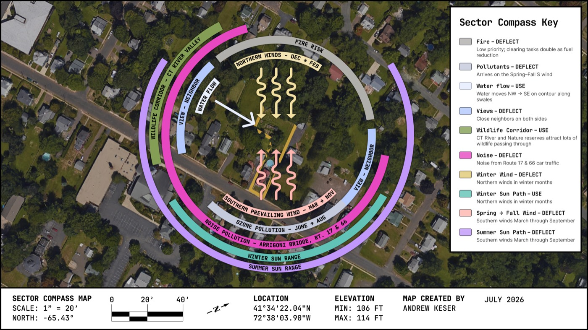

Directional forces that arrive at the site from outside its boundary — sun, wind, fire, pollution, noise, crime, ice, wildlife movement — mapped and matched with a response. Distinct from zones, which organize what happens inside the site.

Sun and wind arcs, noise and wildlife-corridor arrows, all rotated to true north and overlaid on real satellite imagery of the site and its neighborhood. Bearings are computed, not estimated: sun angles from the site's exact coordinates, wind from 10 years of real KHFD station data, noise and wildlife-corridor bearings from the site's exact bearing to Arrigoni Bridge (Rt 17/66, 251°) and Brownstone Park (286°).
A permaculture design doesn't fight these forces; it maps where they come from, how strong and how frequent they are, and then places elements — windbreaks, buffers, corridors, defensible space — to block, filter, channel, or capture each one on purpose. This analysis walks the sector categories from the OSU Introduction to Permaculture "Sectors" chapter, plus the Solar Angle Analysis the Lesson 3 assignment requires alongside it, applied to this specific 0.43-acre site.
Most of the data below is county- or state-level rather than parcel-level — normal for a residential lot this size, since national/state datasets don't resolve to individual half-acre parcels. Where that's the case, it's called out explicitly, and the regional data is used as the best available proxy.
Correction from an earlier draft of this report: the OSU textbook does treat solar aspect as its own later chapter, but the actual Lesson 3 assignment (Sector Compass) explicitly requires a Solar Angle Analysis as part of this deliverable — summer/winter sun angles, used later for the site cross-section's shading and solar-gain analysis. It belongs here, not deferred.
Using SunCalc (one of the three sun-path tools the assignment itself recommends) for the site's exact coordinates (41.5728°N, 72.6344°W):
| Sunrise | Solar Noon | Sunset | Solar Noon Altitude | Daylight | |
|---|---|---|---|---|---|
| Summer solstice (Jun 21) | 5:16 AM, azimuth 57° (ENE) | 12:52 PM | 8:29 PM, azimuth 303° (WNW) | 71.8° (near-overhead) | 15h 12m |
| Winter solstice (Dec 21) | 7:13 AM, azimuth 121° (ESE) | 11:49 AM | 4:24 PM, azimuth 239° (WSW) | 25.0° (low, skimming the southern sky) | 9h 10m |
Four full sun path charts (winter solstice, spring equinox, summer solstice, fall equinox — altitude vs. azimuth, hour-by-hour) are on this site's own Sun Path Charts page.
That's a 46.8° swing in solar noon altitude and over 6 hours of daylight between solstices — expected for this latitude, but worth stating in numbers since it drives every shade/orientation call on the property.
Response: Use. The energy itself — seasonal sun angle — is accepted and worked with, not fought; canopy limbing and bed placement are tuned to capture available low-angle winter sun rather than blocking or intensifying it.
Design implication: the low winter sun (25°) travels a short, low arc through the southern sky, so anything on the south side of a bed — a structure, an evergreen, a neighbor's house — casts a long winter shadow; any spot counted on for winter solar gain needs a genuinely clear southern sightline, not just "faces south." The near-overhead summer sun (71.8°), by contrast, rises/sets far north of due east/west, so east- and west-facing beds still get real low-angle sun in early morning and evening through summer even if they're shaded at midday. Two concrete ties to the master plan: the planned pine/oak limbing raises the effective canopy line, letting more low-angle winter sun reach the ground beneath those trees — relevant if any bed ends up in their winter shadow line. The planned raised beds and new plantings, on a 0.43-acre in-town lot with houses close on both sides, mean a spot that reads as full sun in July can still be shaded by a neighbor's roofline or a deciduous tree (once leafed out, or even bare in winter) at the 25° winter sun angle. Worth an on-the-ground shadow check near the December solstice specifically, not just judging placement off current summer canopy.
Central Connecticut sits in the mid-latitude prevailing westerlies, with a clear seasonal split: northwest-to-north winds dominate the colder months, while southwest-to-south winds predominate from roughly April through September (NWS Boston/Norton, "Prevailing Winds").
Station-level data confirms and sharpens this: 10 years (2016–2025) of hourly METAR observations from Hartford-Brainard Airport (KHFD, 16 km away — the nearest station with an actual historical record; Windfinder's own "Cromwell" spot turned out to be a forecast-model point with no real station behind it) show winter prevailing from the N (14.9% of hours), and spring, summer, and fall all prevailing from the S — most strongly in summer (23.7% of hours from S, only 21% calm). Winter is notably bimodal (both N and S show up as real petals, not just N), which the regional NWS generalization doesn't capture. Four seasonal wind roses and a monthly summary table are on this site's own Wind page.
Response: Deflect (primary), with a secondary Use. Winter NW wind is blocked via windbreak density to cut heating load; the same summer S/SW airflow deflected for pollutant-load reasons could alternately be used for passive cooling if a design element is positioned to catch it — a secondary opportunity, not the primary response.
Design implication: the site's exposed side to winter wind is the NW quadrant — this is the side to prioritize for windbreak density before mini-split/heating-load decisions (ties to the planned electrical panel upgrade that will carry that load) and is worth factoring into where the pollard willow row gets planted if it's meant to double as a windbreak rather than just a material crop and screen. Summer's SW airflow is also the same direction Middlesex County's ozone problem arrives from (see Pollutants, below) — the two sectors compound on that side of the property.
Connecticut's local wildfire risk is low relative to the western US — elevated humidity keeps fuel moisture stable most of the year (CT DEEP Forestry, "Fire Danger, Weather, and Reporting"). That said, the risk isn't zero: in dry autumn stretches the state has seen real elevated fire weather, and in a notable November 2025 episode Connecticut and the rest of the Northeast experienced smoke transport and elevated fire danger from over 800 active wildfires in Canada, carried in on persistent northwest winds (NBC News, Nov 2025).
Response: Deflect (low-intensity). Risk is low but not zero; existing low-effort fuel-reduction tasks are a passive deflection, not an active defensible-space campaign.
Design implication: low priority for defensible-space design (no need for aggressive brush-clearing setbacks the way a western-US site would), but the existing clearing tasks (deadwood/branch cleanup, wood-pile reorganization) already reduce accumulated dry fuel near structures, which is the practical, low-effort version of fire-sector design for a site at this risk level.
Middlesex County (Portland's county) currently carries an F grade for ozone from the American Lung Association's State of the Air report, averaging about 7.2 unhealthy ozone days per year — and CT DEEP anticipates Middlesex being reclassified toward "severe" nonattainment under the 2008 ozone standard. Ozone pollution is a regional transport problem, not a local point-source one — it forms from precursor pollutants carried up the Northeast corridor, arriving predominantly on the same summer SW wind identified in the Wind sector above.
The site has no known active local point-source pollution: Portland's brownstone quarries (a National Historic Landmark since 2000) were an industrial pollution source historically but have been inactive for decades and are now largely a recreational/historic site, not an emissions source.
Response: Deflect. Dense planting on the SW-facing edge filters incoming ozone-precursor-laden summer air rather than doing nothing or trying to amplify airflow through that side.
Design implication: on the design's SW-facing edge, dense planting (trees/shrubs) provides some real particulate/ozone-precursor filtering, which is a reasonable added justification (not the primary one) for the native tree diversity already planned for that side of the property. Practically, this also means scheduling strenuous outdoor work for mornings on summer high-ozone days rather than midafternoon peak.
Portland, CT ranks in the 98th percentile for safety among US cities and is the #2 safest city in Connecticut, with a violent crime rate of roughly 1 per 1,000 residents/year and an overall crime rate about 8x lower than the US average (AreaVibes; City-Data).
Response: Use. The sector is genuinely favorable; the correct response is to accept that baseline as-is rather than over-designing security features the site doesn't need.
Design implication: essentially none needed — this sector doesn't justify security-driven design choices (defensive fencing, lighting-for-safety, sightline control against intruders). Fence and layout decisions (garden-fence removal, raised-bed fencing) can be driven entirely by function (deer, aesthetics — see Wildlife, below) rather than security.
The Northeast sees a major, damaging ice storm roughly every 15–25 years (most recently 2008, with the 1998 storm — ~1.5"+ accretion — being the region's worst on record, causing roughly $1B in damage). Ice accumulation of just 1/4"–1/2" is enough to snap small branches and weak limbs; 1/2"–1" takes down larger branches (Northern Woodlands; NWS Taunton storm reports).
Response: Deflect. Proactive limbing reduces weak-limb ice-load failure risk over paths and structures before it happens.
Design implication: this is a direct, practical reinforcement of two tasks already planned — the planned pine/oak limbing and cutting back the maples aren't just about tick habitat and reuse value, they also reduce the weak-limb load that snaps first in an ice event, particularly over access paths and near structures. Worth keeping in mind when deciding which branches to prioritize removing: weak, low-angle, or overextended limbs over walkways and the shed site first.
The site sits close to the lower Connecticut River corridor, which is a significant regional habitat feature — it's documented as important stopover and breeding habitat for neo-tropical migrant songbirds and supports one of the largest concentrations of migratory waterfowl in southern New England (CT DEEP / regional habitat conservation sources). Deer are locally confirmed near Portland specifically: in fall 2017, Connecticut's first-ever confirmed cases of Epizootic Hemorrhagic Disease (EHDV-6) in white-tailed deer began with dead deer found along a small waterbody adjacent to the Connecticut River in Portland; DEEP went on to document 50+ symptomatic deer, primarily in Middletown and Portland, with an estimated 70+ deaths along the Cromwell-to-Old-Lyme stretch of the river that year — direct evidence of an active local deer population using that corridor.
Response: Use (primary), with a targeted Deflect. The regional habitat/corridor value is embraced and leaned into; the deer-browse pressure that comes with it is selectively deflected via fencing/species choice on vulnerable new plantings rather than accepted wholesale.
Design implication: this is a genuinely favorable sector for the property's existing habitat goals (native trees/shrubs, chicken-coop and evergreen habitat cleanup) — the site can meaningfully contribute to a real regional bird/pollinator corridor, not just an isolated garden. It's also the practical reason to expect real deer browse pressure on new plantings: raised beds and any new perennials/shrubs should assume deer will test them, and fencing or species selection (deer-resistant choices, or accepting some loss during establishment — consistent with the phased-planting approach already preferred for this project) should account for that from the start rather than being a reactive fix later.
Two real, verifiable noise sources sit within the town's small footprint. The Arrigoni Bridge carries CT Route 17/Route 66 across the Connecticut River into Portland, becoming a four-lane road before splitting into Marlborough Street and Gospel Lane — a real traffic corridor, though not a highway-scale one. More distinctively, the former brownstone quarries (161 Brownstone Ave) are now Brownstone Exploration & Discovery Park, an active outdoor adventure park running its own sound system across the site for water sports, cliff jumping, and group activities in-season. It's in the same small town as the site — Portland's built-up area is compact — though the exact distance from Freestone Avenue wasn't confirmed. The Providence & Worcester Railroad also runs an active freight line across the Middletown–Portland railroad bridge — freight, not passenger, so infrequent rather than a steady background source. General aviation airports (Goodspeed in East Haddam, Skylark in East Windsor) are both several miles out and not a meaningful factor here.
Response: Deflect. None of this rises to a dominant sector — no major highway, no passenger rail, no nearby airport — but it's enough to be a mild, real deflect case rather than a non-issue.
Design implication: the plantings already justified for wind and pollutant buffering (the pollard willow row, native tree/shrub diversity) can pull double duty as sound buffering on whichever site edge faces the Route 17/66 corridor or town center, without adding a dedicated noise-buffer planting scheme.
Portland sits in the lower Connecticut River Valley, with the Portland CDP bordered by the river to the west and south and a town elevation around 157 ft (52 m) — modest relief, not dramatic topography. That's regional context, not parcel-specific fact: nothing in available mapping data confirms whether this site itself has a genuine river sightline, is screened by neighboring structures or tree canopy, or sits on a lot with any real topographic distinction. Consistent with how this report treats other parcel-scale unknowns, that's flagged here rather than guessed at — it needs an on-the-ground check, ideally at both leaf-on and leaf-off, before it factors into design. What the Sun/Solar sector already established with more confidence is directly relevant here too: houses sit close on both sides of this 0.43-acre in-town lot, which makes privacy the more defensible design driver until a real view line is confirmed.
Response: Deflect (pending on-site confirmation). Close neighbor proximity is the confirmed, defensible constraint; a genuine view line hasn't been confirmed yet, so it can't be labeled Use in good faith.
Design implication: default to treating close neighbor proximity as the operating constraint and let any screening/hedge plantings — the pollard willow row and native tree/shrub diversity — serve double duty as privacy buffers on the sides facing neighboring houses. If an on-site check during the Design phase (the planned pine/oak limbing, which already opens sightlines while raising the canopy line, is a natural moment to look) turns up a genuine river or landscape view, that specific sightline shifts to Use — worth keeping open rather than screened.
Two real regulatory threads matter for this design, both confirmed to exist though not fully verified in detail. First, Connecticut's Right to Farm Act (Conn. Gen. Stat. § 19a-341) protects generally-accepted agricultural practices — including livestock noise, odor, and normal farm equipment use — from being treated as a nuisance, provided the operation follows accepted practices (see also the Farmland Information Center's summary). That's a real statewide baseline protection once local rules are met. Second, Portland's own municipal code has a dedicated Animals chapter governing exactly this — confirmed to exist, but its page blocked automated fetching, so the specific numbers (minimum lot size, coop setbacks, flock size caps, rooster restrictions — Connecticut towns commonly ban or restrict roosters in residential zones) weren't retrievable and shouldn't be assumed. No HOA turned up in searches for this address or street, consistent with an older, established CT residential neighborhood rather than a planned community with deed restrictions — but that's an absence-of-evidence finding, not a confirmed absence.
Response: Use. Work within the existing regulatory environment (Right to Farm Act, Portland's animal ordinance) rather than around it — verify and comply, then rely on the statutory protection it provides.
Design implication: this directly gates the planned chicken coop / evergreen habitat cleanup — before finalizing coop placement, flock size, or committing design effort to that task, confirm Portland's actual chicken/livestock ordinance (lot-size minimum, setback from property lines, flock cap, rooster restriction) directly with the Town's Planning & Zoning Department or a verified read of Municode Chapter 5, rather than assuming a generic CT small-town allowance applies as-is. Once locally compliant, the Right to Farm Act is a genuine protective backstop against neighbor nuisance complaints down the line.